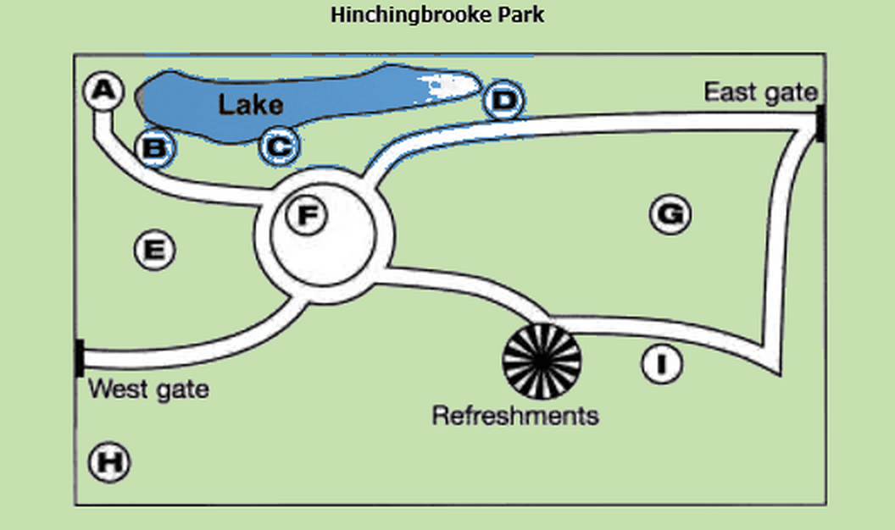

Questions 1–10Complete the form below. Write ONE WORD AND/OR A NUMBER for each answer.
Accommodation form — student information
| Type of accommodation | hall of residence |
| Name | Anu 1 |
| Date of birth | 2 |
| Country of origin | India |
| Course of study | 3 |
| Number of years planned in hall | 4 |
| Preferred catering arrangement | half board |
| Special dietary requirements | no 5 |
| Preferred room type | a single 6 |
| Interests | the 7 and badminton |
| Priorities in choice of hall | To be with other students who are 8 To live outside the 9 To have a 10 area for socializing |
Questions 11–13Complete the table below. Write NO MORE THAN THREE WORDS.
Parks and open spaces
| Name of place | Of particular interest | Open |
|---|---|---|
| Halland Common | Source of River Ouse | 24 hours |
| Hot Island | Many different 11 | 12 |
| Longfield Country Park | Reconstruction of a 2000 year old 13 with activities for children | Daylight hours |
Questions 14–16Choose the correct letter, A, B or C.
Longfield Park
14
As part of Monday's activity, visitors will
15
For the activity on Wednesday,
16
For the activity on Saturday, visitors should
Questions 17–20Label the map below. Write the correct letter, A–I, next to questions 17–20.

17bird hide
18dog-walking area
19flower garden
20wooded area
Questions 21–24Choose the correct letter, A, B or C.
Self-Access Centre
21
Students want to keep the Self-Access Centre because
22
Some teachers would prefer to
23
The students' main concern about using the library would be
24
The Director of Studies is concerned about
Questions 25–30Complete the notes below. Write NO MORE THAN TWO WORDS.
Necessary improvements to the existing Self-Access Centre
Equipment
· Replace computers to create more space
Resources
· The level of the 25 materials, in particular, should be more clearly shown.
· Update the 26 collection.
· Buy some 27 and divide them up.
Use of the room
· Speak to the teachers and organize a 28 for supervising the centre.
· Install an 29
· Restrict personal use of 30 on computers.
Equipment
· Replace computers to create more space
Resources
· The level of the 25 materials, in particular, should be more clearly shown.
· Update the 26 collection.
· Buy some 27 and divide them up.
Use of the room
· Speak to the teachers and organize a 28 for supervising the centre.
· Install an 29
· Restrict personal use of 30 on computers.
Questions 31–40Complete the notes below. Write ONE WORD ONLY.
Business culture
Power Culture
· Characteristics of organization: small 31 power source
· Few rules and procedures
· Communication by 32
· Advantage: can act quickly
· Disadvantage: might not act 33
· Suitable employee: not afraid of 34
· Does not need job security
Role Culture
· Characteristic of organization: large, many 35
· Specialized departments
· Rules and procedures, e.g. job 36 and rules for discipline
· Advantages: economies of scale
· Successful when 37 ability is important
· Disadvantages: slow to see when 38 is needed
· Slow to react
· Suitable employee: values security
· Does not want 39
Task Culture
· Characteristic of organization: project oriented
· In competitive market or making product with short life
· Advantages: 40
· Characteristics of organization: small 31 power source
· Few rules and procedures
· Communication by 32
· Advantage: can act quickly
· Disadvantage: might not act 33
· Suitable employee: not afraid of 34
· Does not need job security
Role Culture
· Characteristic of organization: large, many 35
· Specialized departments
· Rules and procedures, e.g. job 36 and rules for discipline
· Advantages: economies of scale
· Successful when 37 ability is important
· Disadvantages: slow to see when 38 is needed
· Slow to react
· Suitable employee: values security
· Does not want 39
Task Culture
· Characteristic of organization: project oriented
· In competitive market or making product with short life
· Advantages: 40